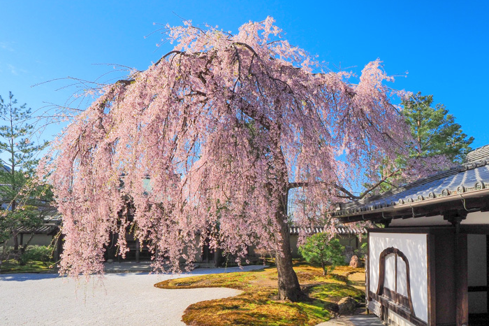
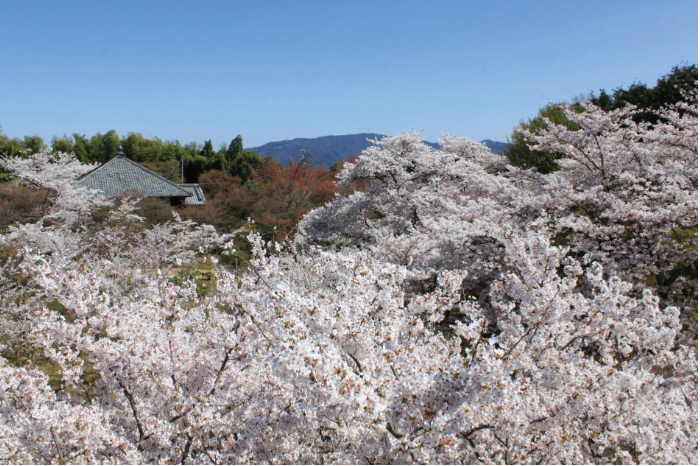

京都マラニック開催決定
京都の桜を見に行こう
イベント概要
京都の桜の名所をランニングで巡るイベントです。
コース予定
- 円山公園
- 高台寺
- 将軍塚清流殿
※コースは変更される可能性があります。

円山公園

高台寺

将軍塚清流殿
開催詳細
日時：2025年4月5日(日) 10時スタート
参加費：10,000円（銭湯代、焼き肉代を含む）
参加資格：12km以上走れる体力のお持ちの方
定員：10名（定員になり次第締め切らせていただきます）
集合場所・スケジュール
タイムスケジュール
- 10:00～12:30 ランニング（円山公園～梅湯）
- 13:45～15:00 銭湯入浴・ランチ・解散
お申し込み
下記のリンクよりお申し込みください：
・申し込みフォーム
・お支払い：PayPay
主催者 KAMEchan
実績
- 第34回全日本トライアスロン皆生大会年代別優勝
- 第4回愛媛県双海トライアスロン大会総合優勝
- 第55回愛媛マラソン大会 記録2時間37分47秒
趣味：トレイルランニング、登山、シュノーケリング